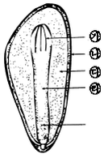
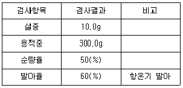

임업종묘기능사 (2012-04-08 기출문제)
1과목: 임의 구분
1. 접목의 장점에 대한 설명으로 틀린 것은?
- 모수의 특성을 그대로 이어 받는다.
- 결실이 불량한 수목 번식에 적합하다.
- 묘목 양성기간이 단축된다.
- 대량으로 번식하기 쉽다.
(정답률: 알수없음)

2. 가을에 노천매장을 해야 하는 종자는?
- 소나무
- 낙엽송
- 잣나무
- 측백나무
(정답률: 알수없음)
3. 채종한 은행종자를 보관하는 방법으로 가장 적합한 것은?
- 종이로 싸서 얼지 않게 방안에 보관하였다 .
- 후숙을 시키기 위하여 고온건조 상태를 유지시켰다 .
- 모래와 섞어 땅속에 묻었다.
- 채종하자마자 바로 파종하였다 .
(정답률: 75%)
4. 산지에 묘목을 식재한 후 가장 먼저 해야 할 무육작업은?
- 풀베기
- 가지치기
- 잡목 솎아베기
- 솎아베기
(정답률: 알수없음)
5. 양버들과 미루나무의 잡종에서 선발 육성된 수종은?
- 수원사시나무
- 미국물푸레
- 네군도단풍
- 이태리포플러
(정답률: 알수없음)
6. 접수 또는 삽수만을 공급하기 위하여 조성된 것을 무엇이라 하는가?
- 채수포(원)
- 채종포(원)
- 클론(clone)보존원
- 유전자 보존원
(정답률: 알수없음)
7. 양분이 결핍되었을 때 묘목의 잎에서 일어나는 황화현상과 가장 관련이 없는 성분은?
- 질소
- 인
- 마그네슘
- 철
(정답률: 알수없음)
8. 일반적으로 미래목 요건에 대한 내용으로 가장 적합한 것은?
- 피압을 받지 않은 상층의 폭목을 포함시킨다 .
- 미래목 외에 중용목은 모두 제거하는 것이 좋다.
- 활엽수는 100~200본/㏊, 침엽수는 200~400본/㏊으로 선정한다.
- 미래목 간의 거리는 최소 10m 이상으로 임지 내에 고르게 분포하도록 한다.
(정답률: 알수없음)
9. 다음 수종을 파종할 때 해가림을 해야 하는 것은?
- 소나무
- 리기다 소나무
- 아까시나무
- 전나무
(정답률: 알수없음)
10. 타가수정 작물이 자식을 거듭하면 현저하게 생활력의 감퇴를 나타내는데 이런 현상을 가리키는 것은?
- 잡종강세
- 불화합성
- 근교약세
- 형질감퇴
(정답률: 알수없음)
11. 묘목 시기에 소나무와 곰솔을 구별하는 기준으로 옳은 것은?
- 소나무의 동아는 회백색이고, 곰솔의 동아는 적갈색이다.
- 소나무의 동아는 황록색이고, 곰솔의 동아는 흑갈색이다.
- 소나무의 동아는 적갈색이고, 곰솔의 동아는 회백색이다.
- 소나무의 동아는 청백색이고, 곰솔의 동아는 황록색이다.
(정답률: 알수없음)
12. 다음 중 꽃피는 시기가 가장 늦은 것은?
- 밤나무
- 개나리
- 생강나무
- 산수유
(정답률: 70%)
13. 밑깎기를 하기에 가장 적합한 시기는?
- 3~4월
- 4~5월
- 6~8월
- 9~10월
(정답률: 알수없음)
14. 묘목을 밭에서 이식할 때 뿌리끊기 작업을 하는 주요 이유는?
- 일을 쉽게 하기 위하여
- 수분의 소모를 억제하기 위하여
- 썩은 뿌리의 제거를 위하여
- 세근의 발달을 위하여
(정답률: 알수없음)
15. 교목에 해당하는 수종이 아닌 것은?
- 느티나무
- 은행나무
- 낙엽송
- 개암나무
(정답률: 알수없음)
16. 천연갱신을 하는 것이 적합한 산림은?
- 보안림, 휴양림
- 경제림, 용재림
- 특용수림, 순림
- 동령림, 순림
(정답률: 알수없음)
17. 다음 그림에서 배유에 해당하는 것은?

- ㉮
- ㉯
- ㉰
- ㉱
(정답률: 80%)
18. 시설양묘에 의해 생산되는 용기육묘의 특징이 아닌 것은?
- 묘목을 특수한 용기에 넣어 밭에서 양묘하는 방법이다.
- 연중생산이 가능하다.
- 시설양묘로 생산되어 조림된 수종은 일반적으로 활착율이 우수하다.
- 유리온실의 가장 일반적인 형태는 와이드스판형과 벤로형 온실이 있다.
(정답률: 알수없음)
19. 정영수(elite tree)의 설명으로 옳은 것은?
- 잡종의 나무이다.
- 수관이 큰 나무이다.
- 이령목이다.
- 표현형과 유전자형이 우수한 나무이다.
(정답률: 알수없음)
20. 북아메리카 원산으로 생장이 빠르며, 사방조림, 연료재 생산, 밀원 수목으로 적합한 수종은?
- 싸리
- 피나무
- 아까시나무
- 이팝나무
(정답률: 알수없음)
2과목: 임의 구분
21. 다음 중 가지치기 방법으로 틀린 것은?
- 각각의 생육단계에 맞도록 높이를 결정한다.
- 침엽수는 절단면이 줄기와 평행되도록 가지를 제거한다.
- 활엽수는 죽은 가지의 경우 지융(융용)부가 상하지 않도록 제거한다.
- 가지치기는 가지의 굵기가 10cm 이내의 것 위주로 제거한다.
(정답률: 알수없음)
22. 2년생 낙엽송의 곤포 당 본수로 가장 적당한 것은?
- 50본
- 100본
- 250본
- 500본
(정답률: 알수없음)
23. 접목의 실행방법에 대한 설명으로 틀린 것은?
- 일반적으로 접수의 채취는 접목하기 약 2~4주 전에 따서 저장한다.
- 짧은 기간 접수 저장시 저장 장소는 0℃ 이하가 되게한다.
- 접을 붙이는 목적을 달성하려면 접수의 선택이 매우 중요하다.
- 칼에 타닌이나 수지가 묻으면 알코올 등으로 닦아 깨끗하게 한다.
(정답률: 알수없음)
24. 일반적으로 잣나무의 1m2당 파종량은 약 얼마인가?
- 10g
- 100g
- 350g
- 600g
(정답률: 알수없음)
25. 다음 육종밥법 중 아조변이를 이용한 육종이 속하는 것은?
- 교잡육종법
- 선발육종법
- 돌연변이육종법
- 배수성육종법
(정답률: 50%)
26. 음수에 해당하는 수종은?
- 전나무
- 낙엽송
- 소나무
- 은행나무
(정답률: 알수없음)
27. 채종원을 만들 때 클론의 식재 배열로 가장 적합한 것은?
- 같은 클론을 한 줄씩 심는다.
- 같은 클론을 두 줄 씩 심는다.
- 같은 클론을 하나 걸러서 나타나도록 심는다.
- 주위에 같은 클론이 나타나지 않도록 심는다.
(정답률: 알수없음)
28. 종자를 밀봉저장 하는 수종은?
- 참나무
- 가시나무
- 잎갈나무
- 은행나무
(정답률: 알수없음)
29. 강원도 정선 소나무림에서 종자를 채취하여 종자검사를 실시하였더니 다음과 같은 결과가 나왔다. 이 소나무 종자의 효율은 얼마인가?

- 5%
- 30%
- 60%
- 90%
(정답률: 알수없음)
30. 다음 접목에서 아접법을 주로 사용하는 것은?
- 밤나무
- 복숭아나무
- 감나무
- 소나무
(정답률: 50%)
31. 강한 음수인 경우 또는 찬바람으로부터 묘목을 보호하기 위해서 실시되는 밑깎기 방법은?
- 둘레깎기
- 전면깎기
- 줄깎기
- 점깎기
(정답률: 알수없음)
32. 숲을 띠 모양으로 구획하고 교대로 2번의 개벌에 의해 갱신을 끝내는 방법은?
- 교호대상개벌작업
- 연속대상개벌작업
- 군상개발작업
- 모수작업
(정답률: 알수없음)
33. 파종상에서 1년 판갈이 된 뒤 판갈이상에서 1년이 지난 만 2년생 묘목의 나이를 표시한 것은?
- 2-0묘
- 1-1묘
- 1-1-1묘
- 1/2묘
(정답률: 알수없음)
34. 묘목운반 및 가식에 고려할 사항으로 틀린 것은?
- 운반 중 묘목의 양이 많으면 겹쳐 눌리지 않도록 선반을 설치해야 한다.
- 가식시 겉면을 포장하여 바람이나 햇볕에 의해 마르지 않도록 한다.
- 가식하는 장소는 습기가 충분하고 햇볕이 많으며 바람을 피할 수 있는 곳이어야 한다.
- 가식밀도를 적절히 조절하고 살균제를 살포하는 것이 효과적이다.
(정답률: 알수없음)
35. 개화결실의 촉진기술이 아닌 것은?
- 뿌리자르기 (단근)
- 환상박피
- 지베렐린 처리법
- 배수체 처리법
(정답률: 알수없음)
36. 돌연변이육종법 중 방사선 조사처리에서 Co60은 어떤 방사선을 내는가?
- Γ선
- β선
- 적외선
- 자외선
(정답률: 알수없음)
37. 접붙임이 잘 이루어지기 위한 접목시기로 가장 알맞은 것은?
- 접수는 휴면 상태이고 대목은 생장활동을 개시한 직후
- 접수와 대목이 모두 휴면 상태일 때
- 접수는 활동한 직후이고 대목은 휴면 상태일 때
- 접수와 대목이 모두 활동을 개시한 직후
(정답률: 알수없음)
38. 묘포면적 중 상면적은 전면적의 몇 % 정도가 적합한가?
- 30~40%
- 50~60%
- 60~70%
- 80~70%
(정답률: 알수없음)
39. 산벌작업과 관련 없는 것은?
- 초벌
- 예비벌
- 하종벌
- 후벌
(정답률: 60%)
40. 상대적으로 종자를 비교적 드물게 파종하는 경우는?
- 산파에 비해 줄뿌림(조파)을 할 때
- 양수에 비해 음수일 때
- 효율이 낮고 종자의 입경이 작을 때
- 다음 해에 상채될 묘목일 때
(정답률: 알수없음)
3과목: 임의 구분
41. 임묙육종의 목표가 되지 않는 것은?
- 생장이 빠른 품종을 육성한다.
- 수간이 곧은 품종을 육성한다.
- 번식력이 강한 품종을 육성한다.
- 가지가 크고 수관이 넓은 품종을 육성한다.
(정답률: 알수없음)
42. 임분 갱신에 관한 설명으로 틀린 것은?
- 파종조림, 식재조림은 인공갱신에 속한다.
- 천연하종갱신은 경제적이고 적지적수가 될 수 있다.
- 모든 임분 갱신은 천연하종갱신으로 하는 것이 좋다.
- 맹아갱신은 대경 우량재 생산이 곤란하다.
(정답률: 알수없음)
43. 묘목의 판갈이 작업을 하는 목적으로 가장 적합한 것은?
- 묘목의 특성과 본질을 유지하기 위해서
- 잔뿌리의 발생을 왕성하게 하여 산지 식재시 활착율을 높이기 위해서
- 묘목의 근장 및 간장 발육만을 촉진하기 위해서
- 잔뿌리의 발생을 억제하여 T/R율을 낮추기 위해서
(정답률: 알수없음)
44. 클론이란 무엇인가?
- 교잡 육종한 것
- 채종원이 조성된 것
- 종자를 채취하여 개체수를 늘린 것
- 가지, 뿌리 등 영양기관의 일부로 무성번식한 것
(정답률: 알수없음)
45. 순계에 대한 설명으로 옳은 것은?
- 영양번식을 하는 작물의 계통
- 유전적으로 완전히 헤테로 상태인 것
- 한 개체에서 유성번식에 의하여 증식된 후대식물의 집단
- 자가수정 식물에서 동일 유전자형의 개체군이 형성된 것
(정답률: 알수없음)
46. 세균에 의해 발생되는 뿌리혹병에 관한 설명으로 옳은 것은?
- 방제법으로는 유기물보다는 석회 시용량을 늘려야 한다.
- 초본식물에도 발생한다.
- 주로 뿌리에 발생하며 가지에는 발생하지 않는다.
- 병원균은 수목의 병환부에서는 월동하지 않고 토양속에서 월동한다.
(정답률: 알수없음)
47. 다음 중 우리나라 산림 쇠퇴의 원인이라고 할 수 없는 것은?
- 공해의 증가
- 자연적 산불의 발생
- 기후 변동과 악화
- 병이나 해충의 피해
(정답률: 알수없음)
48. 유충이 4령기까지는 잎 위에 실을 토하여 만든 집속에 떼지어 살지만 5령기부터 흩어져서 엽맥만 남기고 7월 중·하순까지 가해하며 생활하는 해충은?
- 독나방
- 솔수염하늘소
- 버들재주나방
- 미국흰불나방
(정답률: 알수없음)
49. 다음 중 솔잎혹파리의 우화 최성기로 가장 적합한 것은?
- 4월 상순
- 6월 상·중순
- 9월 하순
- 10월 상·중순
(정답률: 30%)
50. 다음 중 상대적으로 가장 높은 온도의 발병조건을 요구하는 수병은?
- 작엽송 가지끝마름병
- 잿빛곰팡이병
- 리지나뿌리썩음 병
- 소나무잎떨림병
(정답률: 알수없음)
51. 병원체의 감염에 의한 병징 중 변색에 해당하는 것은?
- 오갈
- 함몰
- 모자이크
- 위조
(정답률: 알수없음)
52. 곤충류에서 수컷의 정자를 저장하는 암컷의 기관은?
- 저정낭
- 수정낭
- 알집
- 정집
(정답률: 알수없음)
53. 병원균이 기주식물의 조직 내에서 월동하지 않는 것은?
- 뿌리혹병
- 벚나무 빗자루병
- 포플러 흰가루병
- 낙엽송 가지끝마름병
(정답률: 알수없음)
54. 침엽수 모잘록병, 삼나무 붉은마름병은 어떤 비료를 많이 주었을 때 잘 발생하는가?
- 질소
- 인산
- 칼륨
- 유기질비료
(정답률: 알수없음)
55. 솔나방의 성충 1마리가 몇 개정도의 알을 낳는가?
- 100개
- 50~100개
- 500개정도
- 10000개 정도
(정답률: 알수없음)
56. 성충의 몸길이는 7mm내외이며 몸은 진한 남색이고, 알은 황색이며 타원형으로 장경이 1mm인 산림해충은?
- 오리나무잎벌레
- 솔나방
- 독나방
- 깍지벌레
(정답률: 알수없음)
57. 내화력이 강한 수종으로 짝지어진 것은?
- 단풍나무와 삼나무
- 소나무와 녹나무
- 대왕송과 은행나무
- 해송과 벽오동나무
(정답률: 알수없음)
58. 주제를 용제에 녹이고 거기에 유화제를 첨가하여 물과 섞이도록 한 약제는?
- 용액
- 분제
- 유제
- 수화제
(정답률: 알수없음)
59. 다음 중 진균의 특징이 아닌 것은?
- 균체에는 가는 실모양의 균사가 발달되어 있다.
- 균사는 격막이 있는 것과 없는 것이 있다.
- 엽록소를 갖고 있어 광합성 작용을 한다.
- 고등식물의 세포처럼 세포벽이 있다.
(정답률: 알수없음)
60. 땅속에서 월동하지 않는 해충은?
- 솔잎혹파리
- 잣나무넓적잎벌
- 오리나무잎벌레
- 어스렝이나방
(정답률: 알수없음)
접목의 장점으로는 모수의 특성을 그대로 이어 받을 수 있어서 원하는 특성을 유지할 수 있고, 결실이 불량한 수목도 번식이 가능하며, 묘목 양성기간이 단축되어 생산성이 높아진다는 것이 있습니다.